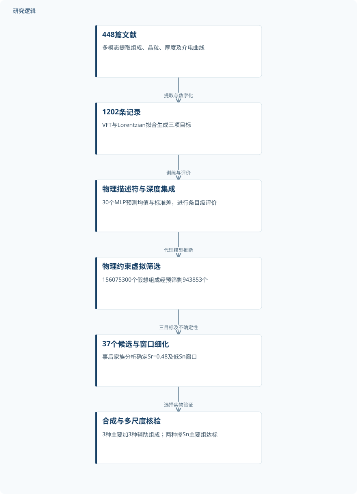
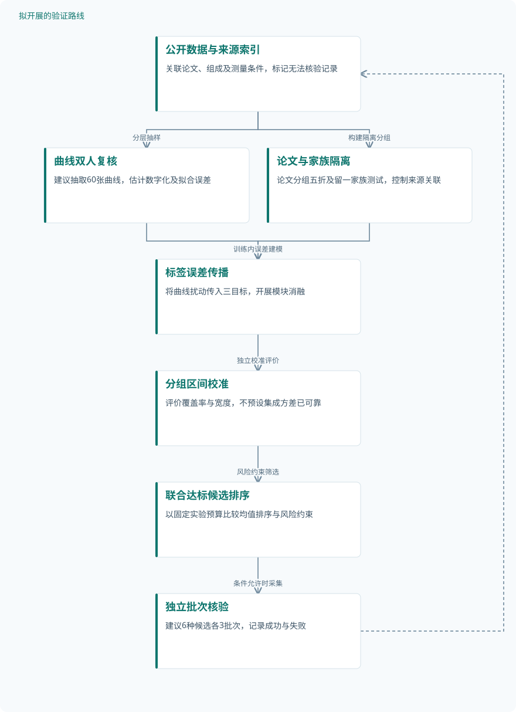

论文精读
多模态文献挖掘赋能机器学习引导的无铅弛豫体逆向设计
Machine-learning-guided inverse design of lead-free relaxors enabled by multimodal literature mining
精读更新 2026-10-05 21:33 · 依据论文全文整理
无铅弛豫体能否同时拥有高介电常数、低于室温的冻结温度和宽温区稳定性？这篇发表于Nature Communications的研究，把文献中的组成信息与介电曲线转化为统一数据，再以物理描述符和深度集成模型搜索材料空间，最终合成验证低Sn掺杂陶瓷。值得细读的，不只是找到两种达标组成，更是文献挖掘、预测不确定性与实物验证如何衔接，以及这一证据链距离可靠器件设计还有多远。
文章目录
高介电响应与温度稳定性，为何难以兼得
高介电常数有利于电容材料的小型化，但尖锐的介电峰往往带来温度敏感性。弛豫体的弥散响应提供了另一条路径，不过提高介电常数、降低冻结温度与拓宽稳定温区并非相互独立，简单增加掺杂量未必能同时改善三者。
作者选择冻结温度Tf描述可用边界，而不是随频率移动的峰温Tm；强频率色散本身并不被视为缺点，冻结区与工作温区重叠才是关键问题。研究因此定位于温度稳定介电材料下选，而非完整电容器认证，也不以新母体化学体系作为成果前提。
把文献曲线变成三目标逆向设计空间
研究整理448篇文献，建立1202条记录，并数字化超过1000张ε–T图；NotebookLM与Gemini 2.0辅助提取组成、晶粒尺寸和厚度。随机抽查50篇未发现不一致，但这不是全数据库字段级误差评估，1202条记录也不等于1202个独立试件。
式(1)以f=f₀exp[−Eₐ/{kB(Tm−Tf)}]拟合冻结温度，方法部分式(2)以ε(T)=ε∞+A/{1+[(T−Tf)/Δ]²}提取ε(@Tf)及稳定性Δ/A。Δ/A越大表示响应越弥散，其单位未明确报告；图1a示意式中心写作Tm，与方法式的Tf不同，复现时不能忽略这一差异。
输入由归一化组成、22个物理描述符及两项微结构变量构成，描述符涵盖半径、电负性、价态、构型熵和轨道代理量。30个bootstrap训练的MLP输出均值与标准差，缺失值填补及缩放均在各折训练部分拟合；虚拟筛选再施加电荷中性、容忍因子、三目标和σ/μ≤0.3约束。
原研究：文献数据到低Sn陶瓷验证


虚拟候选数、文献记录数与合成组成数分别表示不同层级，不对应独立试件数量。
下载 SVG图示关系说明
实线表示相邻阶段的信息流，虚线表示跨阶段联系或反馈。
448篇文献 → 1202条记录：提取与数字化；1202条记录 → 物理描述符与深度集成：训练与评价；物理描述符与深度集成 → 物理约束虚拟筛选：代理模型推断；物理约束虚拟筛选 → 37个候选与窗口细化：三目标及不确定性；37个候选与窗口细化 → 合成与多尺度核验：选择实物验证
从1.56亿个虚拟组成走向六种合成组成
条目级随机五折交叉验证给出基础MLP的R²>0.8，集成袋外R²分别为0.816、0.783、0.815，对应Tf、ε(@Tf)和log(stability)。两种评价设置不能直接比较增益；未按论文或组成家族隔离，也没有已核对的独立外部测试及模块消融结果。
156075300个假想组成经物理预筛缩减至943853个，最终保留37个；这是代理模型推断，不是同等数量的实物或原子尺度仿真。筛选固定晶粒尺寸1 μm、坯片厚度1 mm，随后确定(Sr₀.₄₈Na₀.₂₆Bi₀.₂₆)(Ti₁₋ₓSnₓ)O₃窗口，并合成3种主要组成和3种辅助基准组成。
主要组x=0、0.01、0.02分别记为SNBT、SNBTS1、SNBTS2，另以BTO作正常铁电参考。25 °C、100 Hz下介电常数依次为3952、3422、3307，VFT冻结温度依次为−9.8、−11.9、−13.0 °C；独立试件数与合成批次数未报告，辅助组仅有合并的定性一致性结论。
| 验证任务 | 样本与规模 | 主要结果 |
|---|---|---|
| 文献数据库质量检查与三目标模型评价 | 随机抽查50篇论文；独立材料和试件数未报告。30个MLP是模型数量，bootstrap重采样不是新增独立材料。 | 抽查未发现不一致；基础MLP交叉验证R²>0.8，集成袋外三目标R²依次为0.816、0.783、0.815。 |
| 物理约束虚拟筛选与Sr–Sn窗口细化 | 156075300个假想组成，物理预筛保留943853个，图示Tf筛选后363645个，最终37个；均非实物试件。 | 37个候选中SNBTS家族最多，确定Sr=0.48及Sn=1–2 mol%窗口，以0 mol% Sn作为组成对照。 |
| 合成陶瓷的介电响应与温度稳定性验证 | 主要3种、辅助3种组成，另制备BTO参考；每种独立试件和批次数未报告。74条家族文献记录不是试件数。 | 主要组Tf依次−9.8、−11.9、−13.0 °C，室温100 Hz介电常数3952、3422、3307；两种掺Sn组达标并超过p95包络。 |
| 宏观响应与局部极性结构的联合验证 | STEM比较SNBT与SNBTS2，Raman比较主要3组，每谱平均5次扫描；试件、视场及原子柱统计数量未报告。 | SNBT/SNBTS呈细瘦回线；SNBTS2撤偏压相位由51.3°回到−109.3°。SNBT与SNBTS2平均投影位移约17.1、14.8 pm。 |
展开数据来源、分组、对照与验证边界
文献数据库质量检查与三目标模型评价
数据来源。448篇文献形成1202条记录，超过1000张ε–T图数字化；组成、22个物理描述符及微结构变量作为输入。
分组与工况。分别预测Tf、ε(@Tf)、log(stability)；网络隐藏层为(128,64,32)，采用ReLU、AdamW、dropout和早停。
数据划分。条目级随机五折交叉验证；逐折训练内完成填补与缩放。集成另报告袋外评价，具体样本构造及外部测试未报告。
对照与消融。基础MLP提供不同评价设置的参照；其他模型、描述符、插补策略及不确定性模块消融未报告。
评价指标。预测采用无量纲R²；Tf单位K，稳定性为Δ/A，单位及log底数未明确报告；抽查缺少字段级误差率。
验证边界。未按来源论文或家族隔离，存在关联记录跨折风险；曲线数字化误差和不确定性校准未报告，不能证明跨家族泛化。
物理约束虚拟筛选与Sr–Sn窗口细化
数据来源。无铅、无稀土钙钛矿组合空间；A位为Ba、Sr、Ca、Bi、Na、K，B位为Ti、Mn、Sn、Fe、Zn、Nb。
分组与工况。包含3×1、3×2及低阶组合，计量网格分辨率0.01；固定晶粒1 μm、坯片厚度1 mm，再细化Sr与Sn比例。
数据划分。由已训练集成模型推断虚拟候选；候选不是交叉验证测试样本，筛选阶段未报告独立验证集。
对照与消融。比较不同NBT/ST比例及Sn含量的预测曲线；取消电荷、容忍因子或不确定性约束的消融未报告。
评价指标。|Δq|<10⁻⁴、0.95<t<1.05；Tf<298 K、ε(@Tf)>3300、Δ/A>0.08，各目标σ/μ≤0.3。
验证边界。部分正文阈值带等号、流程图使用严格不等号，实际边界实现不能核实；固定微结构不支持直接推广至其他加工条件。
合成陶瓷的介电响应与温度稳定性验证
数据来源。固相合成SNBT、SNBTS1、SNBTS2及辅助组成，测量介电频温响应；BTO及文献性能数据作为参照。
分组与工况。主要组x=0、0.01、0.02；介电频率100 Hz–100 kHz。SNBTS在900 °C煅烧4 h、1200 °C烧结2 h。
数据划分。属于合成后核验；与训练文献的重合情况未报告，不能视为已确认的严格独立外部测试。
对照与消融。未掺Sn的SNBT、BTO、文献p95包络及74条家族记录；BTO工艺和晶粒不匹配，不是严格微结构控制对照。
评价指标。VFT冻结温度、ε(@Tf)、Δ/A、25 °C介电常数及85、105、125 °C处|Δε/ε25|；γ作为弥散性辅助指标。
验证边界。缺少重复数及精确实测ε(@Tf)、Δ/A数值；高温侧通过不能替代全温区认证，损耗残缺数字不能安全分配给样品。
宏观响应与局部极性结构的联合验证
数据来源。主要陶瓷的P–E、S–E、XRD、Raman及HAADF-STEM数据；PFM比较BTO与SNBTS2的偏压响应。
分组与工况。P–E为20 Hz、20/40/60 kV/cm；S–E为室温10 Hz、最高±60 kV/cm；PFM依次记录初始、10 V及撤偏压即时状态。
数据划分。属于物理表征而非训练测试划分；未报告盲法、独立重复批次或机制验证专用外部样本。
对照与消融。SNBT为未掺Sn组成对照，BTO为正常铁电参考；PFM用初始状态作时序参照，没有完整机制消融。
评价指标。Pr、Ec、Smax及d33*=Smax/Emax；PFM相位，STEM投影位移，Raman峰位及XRD平均结构。
验证边界。二维投影不能重建三维极化；位移±项统计定义缺失。Raman拟合R²≈0.998不属于预测性能，也不独立证明结构因果机制。
突破经验边界，但尚未闭合可靠性证据链
SNBTS1和SNBTS2达到预设三目标，并位于文献经验p95包络之上；该包络并非材料空间的理论极限。两者满足85、105、125 °C处|Δε/ε25|<15%的要求，这只证明X5R/X6R/X7R高温侧条件，不代表全温区合规；室温介电常数也不能替代ε(@Tf)。
Sn增加伴随晶格膨胀、Raman峰红移和局部位移取向分散，PFM撤偏压后恢复则支持主要可逆的极性响应。多尺度观测与“八面体扰动增强极性异质性”的解释一致，但SHAP不是因果证明，STEM仅为二维投影；缺少重复试件统计、校准不确定性及器件级可靠性指标，限制了结论的推广范围。
从这篇论文走向下一项研究
以下为结合研究方向提出的候选方案，实验设计与预期目标有待验证。
来源隔离与误差传播驱动的可信逆向筛选
问题与短板。原研究虽控制了折内预处理泄漏，但条目随机划分仍可能共享论文来源和相近组成。建议优先检验来源关联与曲线提取误差，是否使预测精度和候选置信度过于乐观。
改进机制。从公开Zenodo数据、代码及可获取原图建立来源索引，区分论文、组成和测量条件。将曲线数字化与拟合扰动传播到目标标签，再以论文分组校准预测区间，避免把集成标准差直接解释为达标概率。
候选创新。相关建筑能耗代理研究摘要已采用分组共形校准和迁移评价，校准本身并非新技术。候选创新是将来源隔离、曲线误差传播与三目标联合达标筛选组合起来，验证其材料下选价值。
数据与实验设计。建议设计：先复用1202条公开记录，实施论文分组五折和留一家族测试；另人工双人复核60张分层抽样曲线。若具备合作测试条件，再采集6种候选、每种3个独立批次的数据，完整保留失败记录。
对照与消融。基线包括原条目随机划分、同架构分组划分和仅均值排序。逐项消融标签误差传播、区间校准与联合约束，并保持候选预算一致；人工复核不能作为新增独立材料样本。
成功判据。预先登记三目标MAE、R²、90%区间覆盖率及宽度，另比较固定实验预算下的联合达标率。只有覆盖率接近名义水平且未以过宽区间换取，才支持筛选可信度改善。
风险与替代方案。论文分组后可能样本不足，家族外推区间也可能失效。可退回适用域内的局部筛选并增加失败候选采集；无法获得原图时，应单列不可核验记录，而不是默认其标签无误。
把低Sn组成点扩展为加工扰动下的可靠窗口
问题与短板。当前筛选固定晶粒和厚度，而两种达标组成的室温介电常数距3300门槛并不宽裕。建议检验烧结、厚度和批次波动是否改变达标判断，再讨论器件层面的可靠性优化。
改进机制。建立组成—工艺—微结构的分层代理，将批次变异与测量误差分开。以温度响应、DC偏压保持和击穿风险共同约束稳健窗口，不把原有Δ/A指标直接当作长期可靠性替代量。
候选创新。《Certification-aware uncertainty-guided inverse design of additively manufactured alloys》摘要已提出不确定性约束的组成窗口。这里拟迁移其窗口思想，组合弛豫介电目标与加工容差评价；这不是原研究已验证的器件方案。
数据与实验设计。建议设计：选Sn为0、1、2 mol%，烧结温度为1180、1200、1220 °C，每组3个独立批次，形成27个批次。采用自建或合作测试采集统一厚度、电极、频温和DC偏压数据，试件数按击穿统计需求另行确定。
对照与消融。对照原1200 °C工艺、仅优化名义性能和加入批次风险的设计。消融晶粒变量、工艺变量及风险约束；如加入BTO，应尽量匹配厚度和晶粒，否则仅保留定性参考用途。
成功判据。先确认三目标在独立批次中的保持率，再比较同等测试条件下的DC偏压衰减和击穿分布。完整温区性能与长期老化须单独验证，成功应体现达标窗口扩大，而非仅最好试件提高。
风险与替代方案。烧结变化可能同时改变Bi挥发、致密度与晶粒，导致归因混杂；击穿和寿命测试也可能成本过高。可先用成分、密度和低场温度响应分阶段淘汰，再对少量稳健窗口开展可靠性试验。
拟议路线：来源隔离与校准筛选


对应第一条研究建议；所有新增复核、校准与实验均为拟议设计，不表示已取得改善。
下载 SVG图示关系说明
实线表示相邻阶段的信息流，虚线表示跨阶段联系或反馈。
公开数据与来源索引 → 曲线双人复核：分层抽样；公开数据与来源索引 → 论文与家族隔离：构建隔离分组；曲线双人复核 → 标签误差传播：估计标签扰动；论文与家族隔离 → 标签误差传播：训练内误差建模；标签误差传播 → 分组区间校准：独立校准评价；分组区间校准 → 联合达标候选排序：风险约束筛选；联合达标候选排序 → 独立批次核验：条件允许时采集；独立批次核验 → 公开数据与来源索引：回填批次与失败